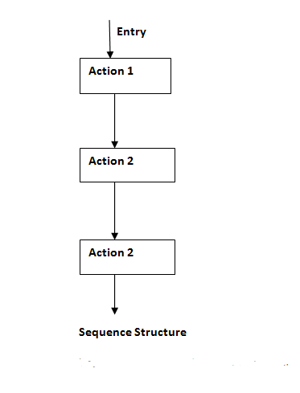
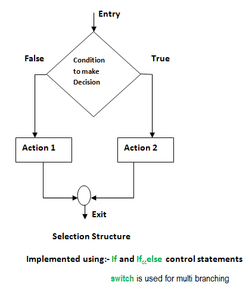
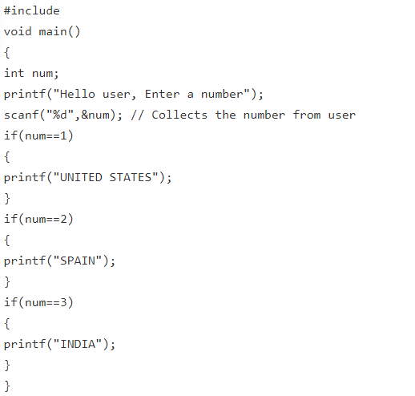
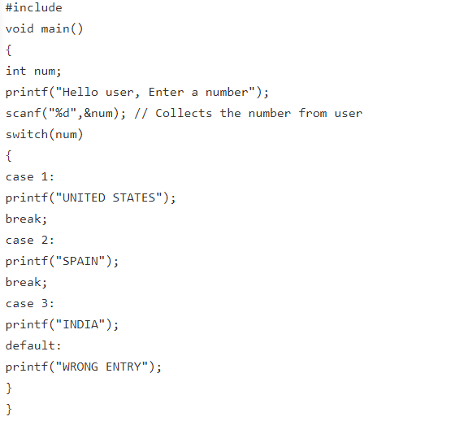
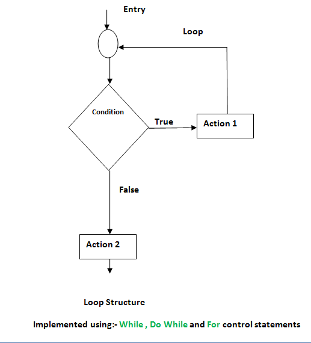

Control Structures
Introduction
Control structures form the basic entities of a “structured programming language“. We all know languages like C/C++ or Java are all structured programming languages. Control structures are used to alter the flow of execution of the program. Why do we need to alter the program flow ? The reason is “decision making“! In life, we may be given with a set of option like doing “Electronics” or “Computer science”. We do make a decision by analyzing certain conditions (like our personal interest, scope of job opportunities etc). With the decision we make, we alter the flow of our life’s direction. This is exactly what happens in a C/C++ program. We use control structures to make decisions and alter the direction of program flow in one or the other path(s) available.
There are three types of control structures available in C and C++
1) Sequence structure (straight line paths)
2) Selection structure (one or many branches)
3)Loop structure (repetition of a set of activities)
All the 3 control structures and its flow of execution is represented in the flow charts given below.

Sequence structure

Selection structure
Selection structures are used to perform ‘decision making‘ and then branch the program flow based on the outcome of decision making. Selection structures are implemented in C/C++ with If, If Else and Switch statements. If and If Else statements are 2 way branching statements where as Switch is a multi branching statement.

Example
Example program to demo “If” statement
Problem:-
A simple example program to demo the use of If, If Else and Switch is shown here. An integer value is collected from user.
If the integer entered by user is 1 – output on screen “UNITED STATES”. If the integer is 2 – output “SPAIN”, If the integer is 3 output “INDIA”. If the user enters some other value – output “WRONG ENTRY”.

Switch Statement
Switch is a multi branching control statement.Execution of switch statement begins by evaluating the expression inside the switch keyword brackets. The expression should be an integer (1, 2, 100, 57 etc ) or a character constant like ‘a’, ‘b’ etc. This expression’s value is then matched with each case values. There can be any number of case values inside a switch statements block. If first case value is not matched with the expression value, program control moves to next case value and so on. When a case value matches with expression value, the statements that belong to a particular case value are executed.
Notice that last set of lines that begins with default. The word default is a keyword in C/C++. When used inside switch block, it is intended to execute a set of statements, if no case values matches with expression value. So if no case values are matched with expression value, the set of statements that follow default: will get executed.
Note: Notice the break statement used at the end of each case values set of statements. The word break is a keyword in C/C++ used to break from a block of curly braces. The switch block has two curly braces { }. The keyword break causes program control to exit from switch block.

Loop structures
A loop structure is used to execute a certain set of actions for a predefined number of times or until a particular condition is satisfied. There are 3 control statements available in C/C++ to implement loop structures. While, Do while and For statements. 
The while statement
Syntax for while loop is shown below:
while(condition)// This condition is tested for TRUE or FALSE. Statements inside curly braces are executed as long as condition is TRUE
{
statement 1;
statement 2;
statement 3;
}
The condition is checked for TRUE first. If it is TRUE then all statements inside curly braces are executed.Then program control comes back to check the condition has changed or to check if it is still TRUE. The statements inside braces are executed repeatedly, as long as the condition is TRUE. When the condition turns FALSE, program control exits from while loop.
Note:- while is an entry controlled loop. Statement inside braces are allowed to execute only if condition inside while is TRUE.
The do while statement
Syntax for do while loop is shown below:
do
{
statement 1;
statement 2;
statement 3;
}
while(condition);
Unlike while, do while is an exit controlled loop. Here the set of statements inside braces are executed first. The condition inside while is checked only after finishing the first time execution of statements inside braces. If the condition is TRUE, then statements are executed again. This process continues as long as condition is TRUE. Program control exits the loop once the condition turns FALSE.
The for statement
Syntax of for statement is shown below:
for(initialization statements;test condition;iteration statements)
{
statement 1;
statement 2;
statement 3;
}
The for statement is an entry controlled loop. The difference between while and for is in the number of repetitions. The for loop is used when an action is to be executed for a predefined number of times. The while loop is used when the number of repetitions is not predefined.
Working of for loop:
The program control enters the for loop. At first it execute the statements given as initialization statements. Then the condition statement is evaluated. If conditions are TRUE, then the block of statements inside curly braces is executed. After executing curly brace statements fully, the control moves to the "iteration" statements. After executing iteration statements, control comes back to condition statements. Condition statements are evaluated again for TRUE or FALSE. If TRUE the curly brace statements are executed. This process continues until the condition turns FALSE.
Note 1:- The statements given as "initialization statements" are executed only once, at the beginning of a for loop.
Note 2: There are 3 statements given to a for loop as shown. One for initialization purpose, other for condition testing and last one for iterating the loop. Each of these 3 statements are separated by semicolons.